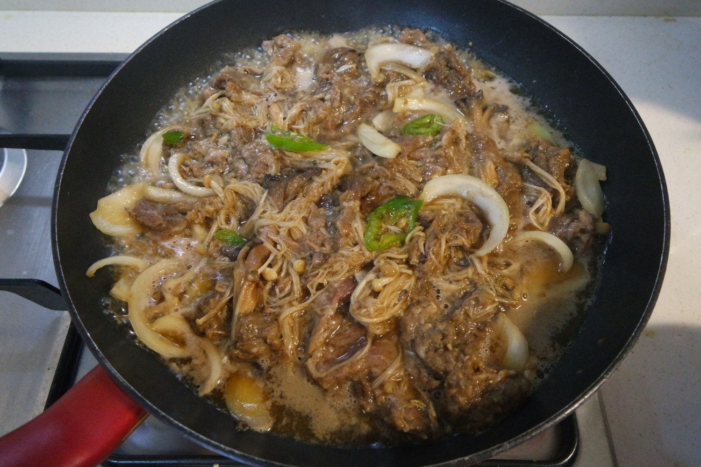

KOREAN BEEF BULGOGI
Ingredients
| beef | 500g |
| leek | 1 ea |
| enoki mushroom | 1 ea |
| red pepper | 1 ea |
| brown sugar | 2.5 T |
| oligosaccharide | 1 T |
| onion | 3/4 ea |
| ground onion | 2 T |
| crushed garlic | 1 T |
| thick soy sauce | 6 T |
| ground pepper | suitably |
| sesame oil | 3 T |
| sesame seeds | enough |
Cooking Steps
STEP 1/13
Slice 3/4 of the onion into pieces and finely chop the remaining 1/4 to blend well.
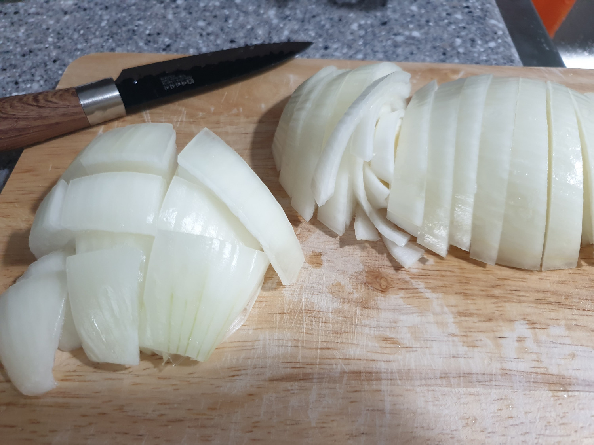
STEP 2/13
Grind the chopped 1/4 onion finely.
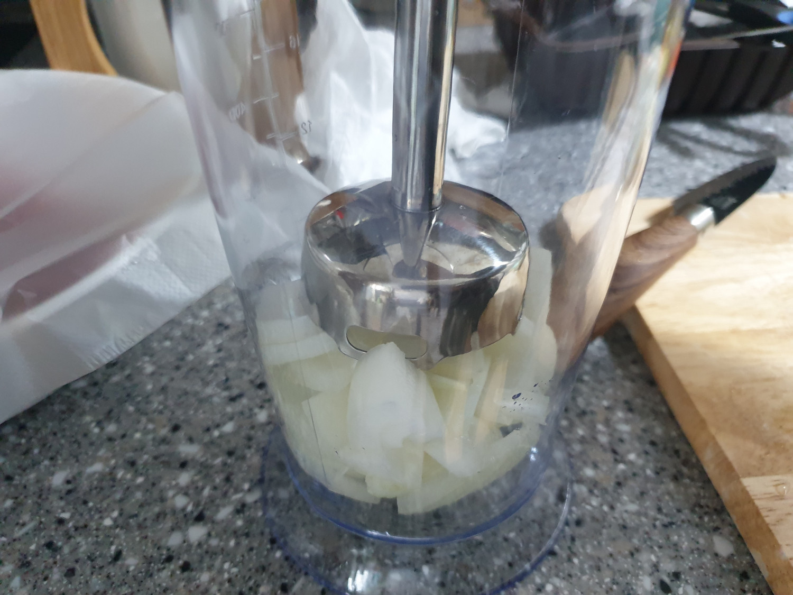
STEP 3/13
Add sugar and oligosaccharide to the beef and mix well.
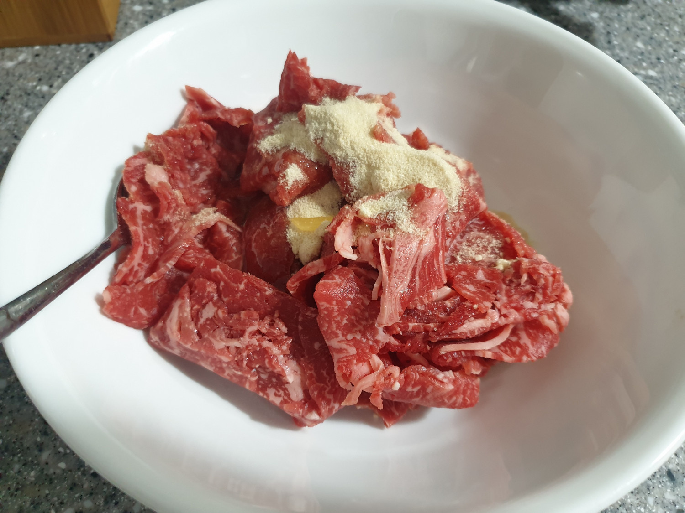
STEP 4/13
Add 2 teaspoons of the ground onion to the sugar-coated beef and mix thoroughly again.
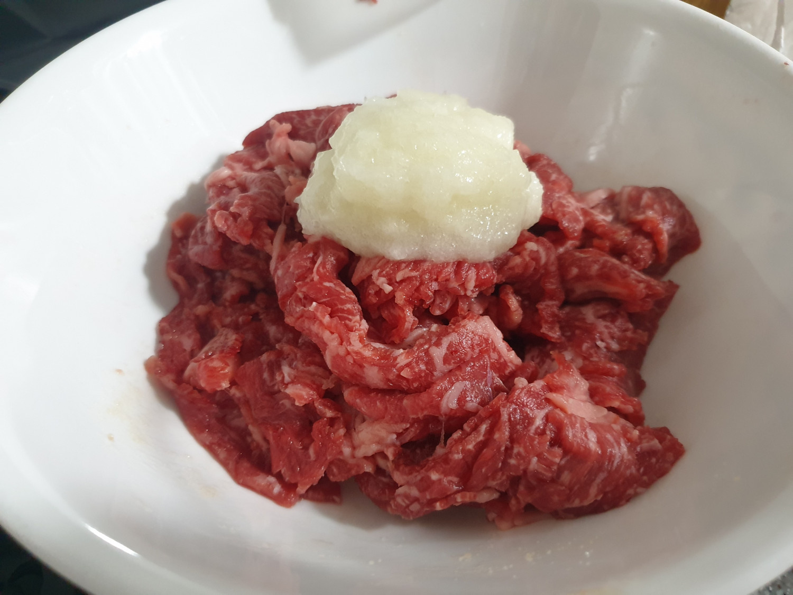
STEP 5/13
Let the mixture rest for 10 minutes.
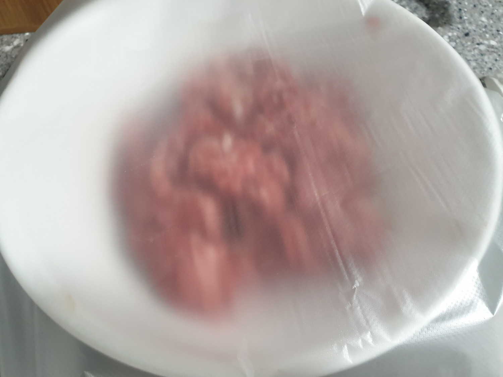
STEP 6/13
Diagonally slice the green onion, wash the enoki mushrooms well, and separate them into small pieces.
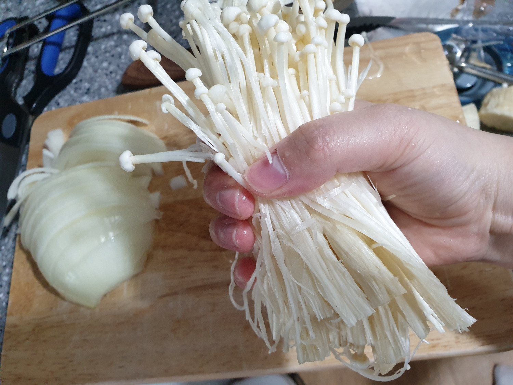
STEP 7/13
After 10 minutes, add minced garlic, pepper, soy sauce, and sesame oil to the beef mixture and mix well.
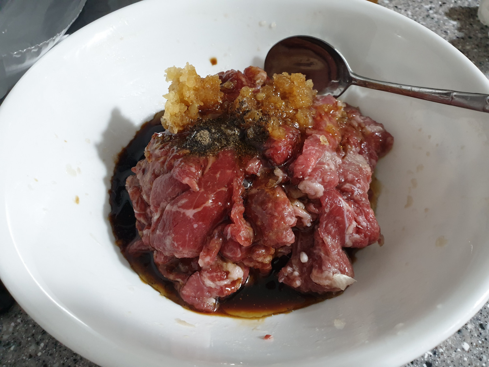
STEP 8/13
You can let the beef marinate in the refrigerator, or cook it right away.
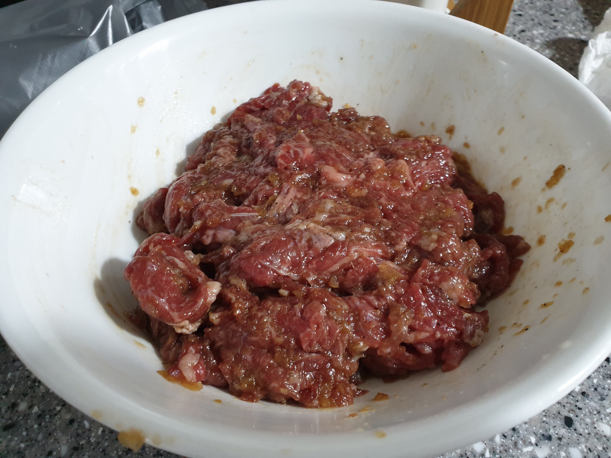
STEP 9/13
Add the green onions and enoki mushrooms and mix well.
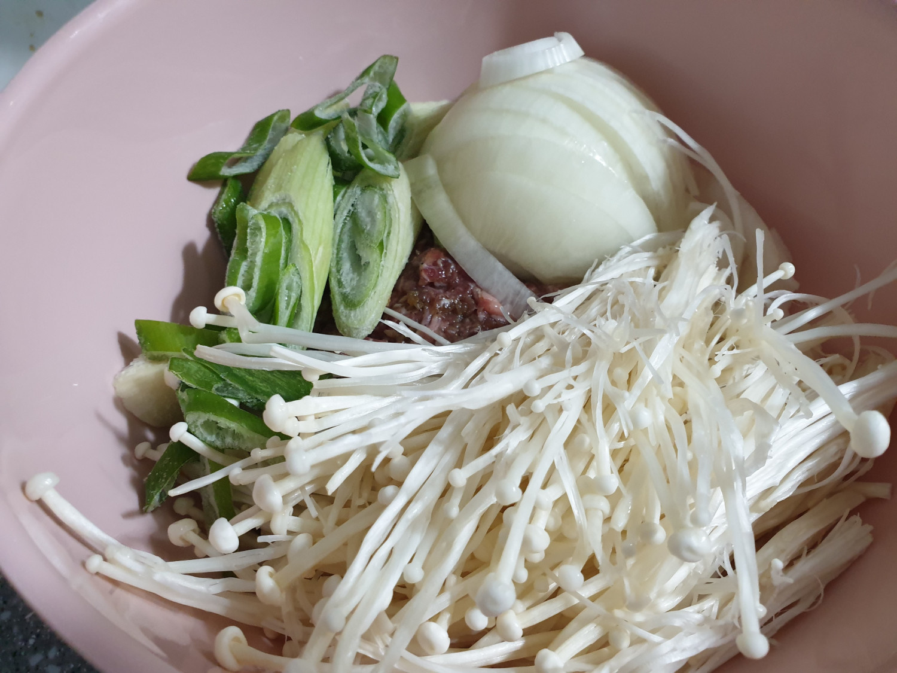
STEP 10/13
If you're using a stronger-flavored mushroom like shiitake, add it during cooking rather than mixing it in.
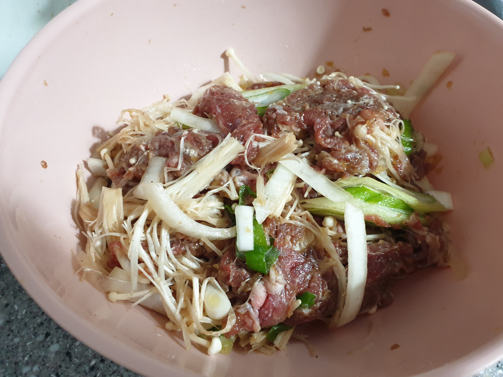
STEP 11/13
Place the mixture in a heated pot and stir-fry well.
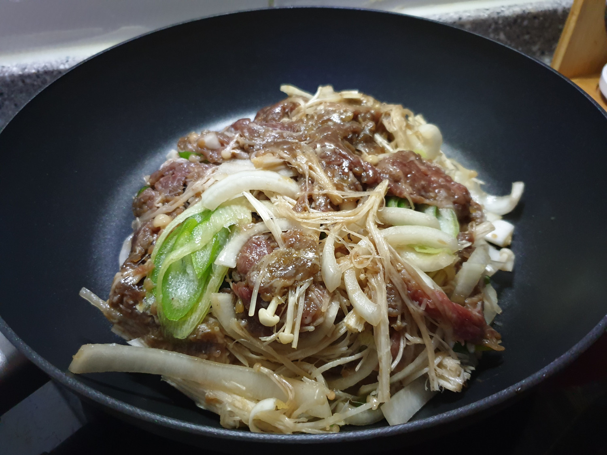
STEP 12/13
Stir-fry until you reach your desired level of sauce thickness.
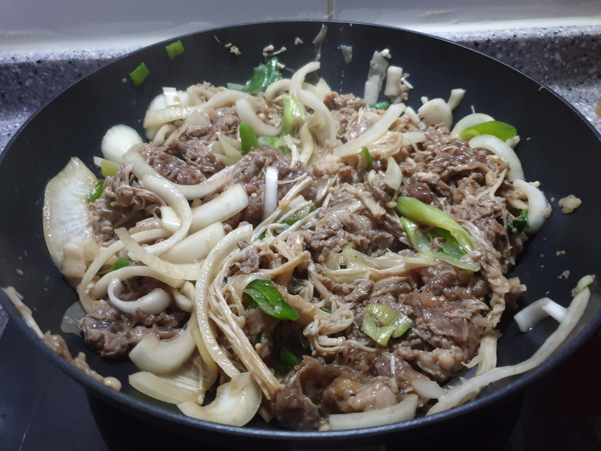
STEP 13/13
When done, transfer to a bowl, sprinkle with sesame seeds, and enjoy!
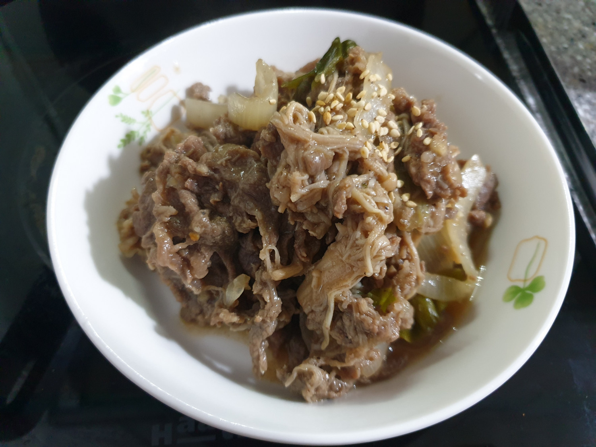